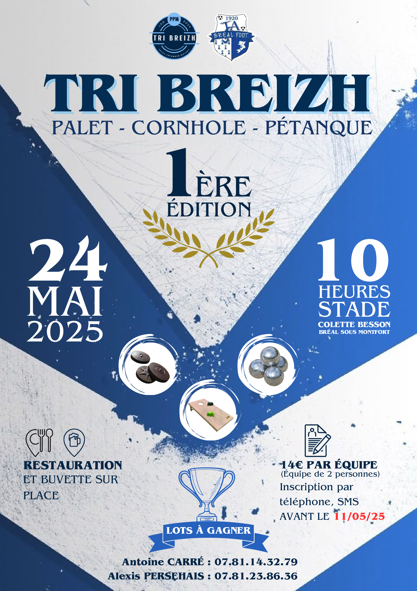
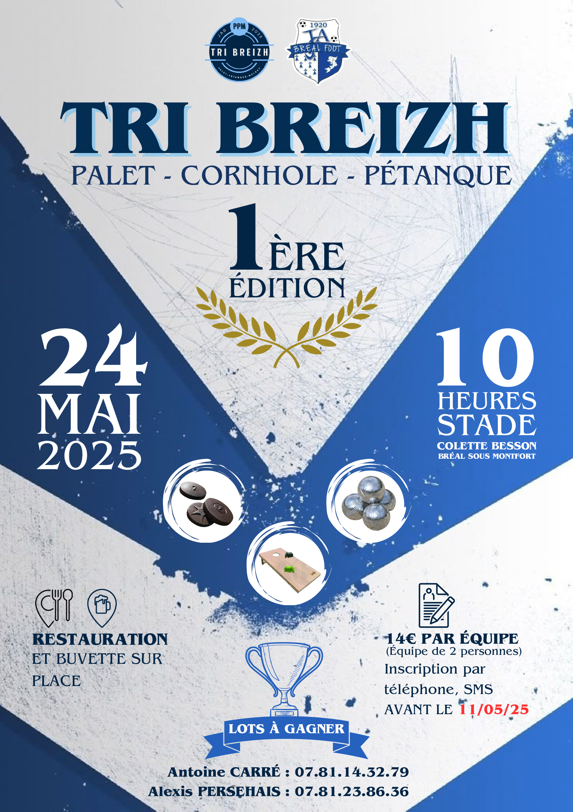
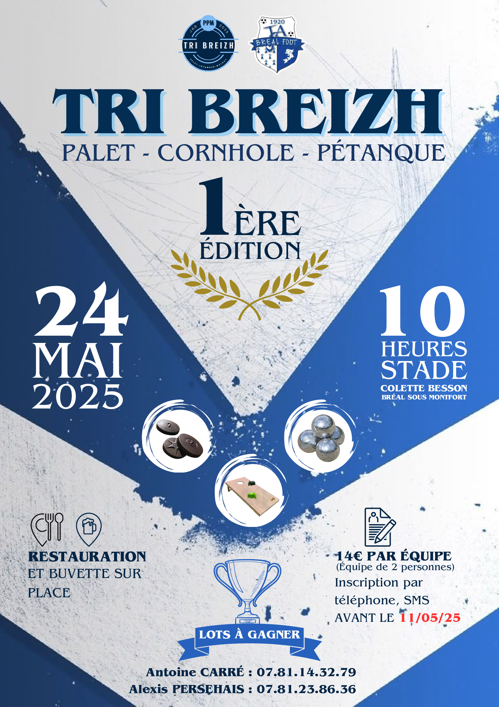

Projets Professionnels


 


La Ja Breal
Stage en marketing digital et création de contenu pour un club de football.
Vous y découvrirez mes projets, mon parcours et mes compétences.
Bonne visite !
Voir mes projetsüëã Bonjour, je suis Belhaj Ilias, j'ai 22 ans, et le monde du num√©rique me fascine dans ses moindres recoins.
Après un bac STMG, j'ai naturellement poursuivi mes études en BTS MCO. Mais très vite, je me suis rendu compte que ce n'était pas ma voie. Passionné par le numérique, je me suis réorienté vers le digital — un domaine dans lequel je m'épanouis pleinement aujourd'hui.
En ce moment, je fais un Bachelor Digital à My Digital School et je me spécialise autour de : Développement web, design UX/UI, marketing… pour donner vie à des idées fraîches et utiles.
üíº Au sein de l'√©quipe de La Ja Breal, je suis en stage dans ce club de Football et je m'occupe des t√¢ches principales : r√©diger des posts, de la cr√©ation de contenus, une vraie chance qui me permet d'apprendre sur le terrain et de tester chaque th√©orie.
üåü Curieux, cr√©atif, un brin minutieux, je cherche √† marier r√©flexion et esth√©tique pour livrer des exp√©riences digitales qui marchent et qui plaisent. Quand je m'√©loigne des √©crans, je pioche des r√©f√©rences dans le cin√©ma, l'art, le sport, les voyages, et √ßa alimente ma mani√®re de voir le web.
üìå Mon mot d'ordre ? D√©couvrir, jouer, √©voluer - et sourire √† chaque √©tape ! üëâ Tu aimerais en savoir plus ? Je t'invite √† parcourir mes projets ou √† me parler directement, je r√©ponds avec plaisir.
Photoshop, Illustrator, InDesign, Premiere Pro, After Effects
Design UI/UX, Prototypage, Collaboration
Création de sites web, Gestion de contenu
Design graphique, Création de visuels

Stage en marketing digital et création de contenu pour un club de football.